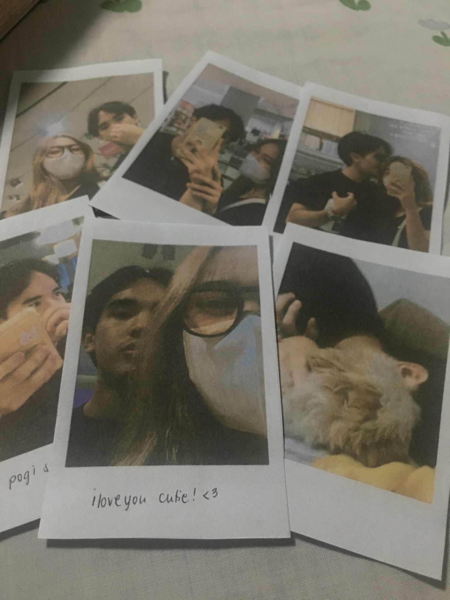
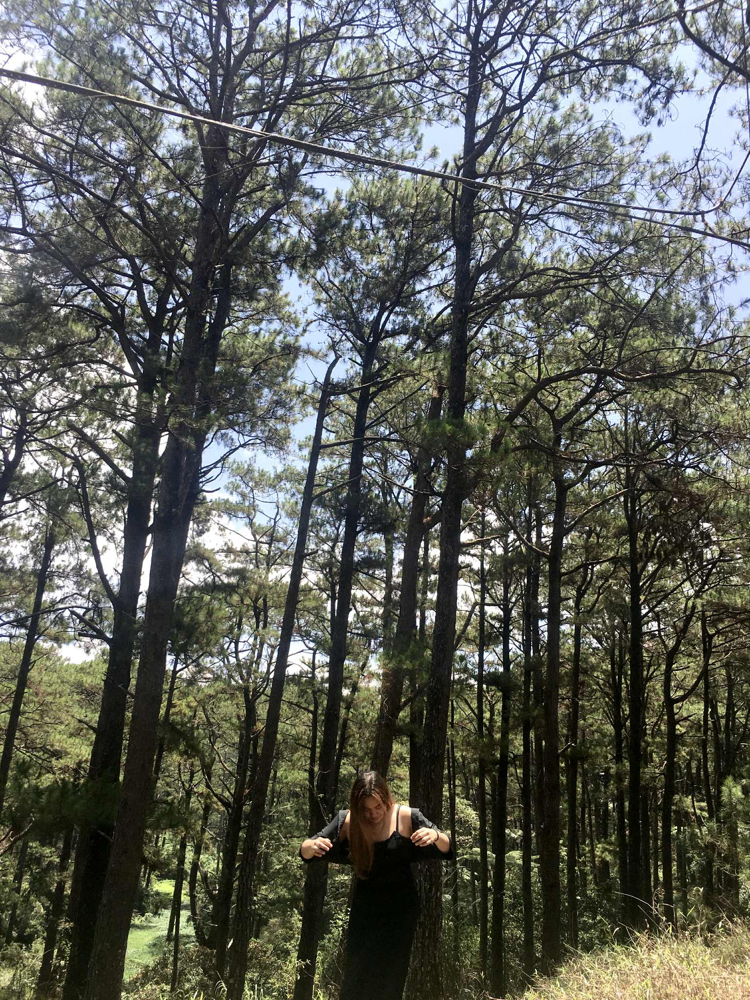

Geom Persona isn’t just a personality test — it’s a mirror made of shapes. A visual language for how people move through life: softly, sharply, with rhythm or resistance.
Every persona starts as a shape, but behind each one is a pattern of thought, feeling, and instinct. This system draws from MBTI and the emotional style of Cosmos Persona, reimagined in forms that feel symbolic instead of clinical.
Hi, I’m Miguel Fangon — an IT student, designer, and someone endlessly curious about creativity, emotion, and how we tell stories about who we are.
 This project was born from a simple but profound idea. It is to get to know my lover even more deeply, even after years together. Love is not just about the time spent, but about the curiosity and effort to understand each other in new ways, again and again. By creating this project, I hope to discover new facets of her personality, so I can love her more fully and in the ways that truly matter to her. This is my way of saying that learning and loving never stop, and that every day is a chance to know and cherish her better.
Geom Persona is my way of making self-discovery softer, stranger, and more visual. No diagnoses. No long-winded reports. Just shapes that feel like truth.
And like all things that feel real — it’s still evolving.